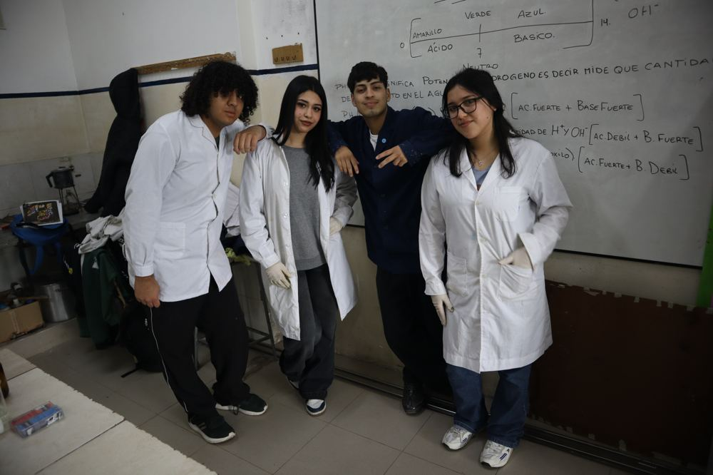

Pasantías

¿Qué son las pasantías?
Las pasantías prácticas o como su nombre real las profesionales rentadas que forman parte indivisible del diseño curricular del Técnico Químico (segundo ciclo de educación secundaria técnica). Estas consisten en la realización de actividades concretas en empresas u organizaciones privadas, públicas o no gubernamentales, bajo la supervisión de la institución educativa. El objetivo es aplicar conocimientos especializados en el perfil profesional, permitiendo al estudiante: Realizar análisis químicos, fisicoquímicos y microbiológicos en laboratorios de industrias diversas (alimenticias, farmacéuticas, textiles, etc.). Operar y administrar laboratorios y plantas de producción, interpretando análisis instrumentales. Participar en el control de calidad, muestreo y preparación de muestras. Desarrollar competencias en gestión de procesos productivos y mantenimiento básico de equipos.
